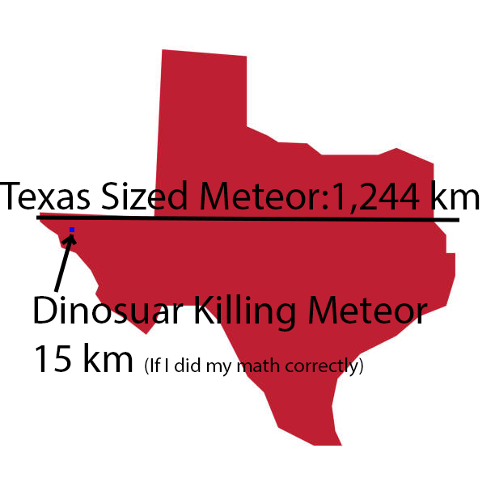
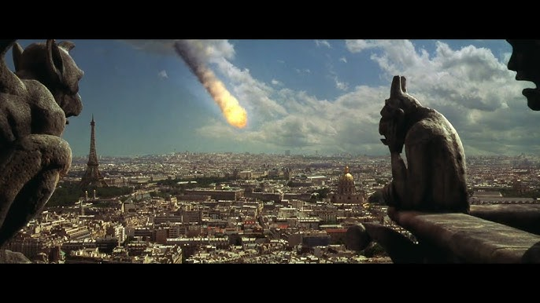
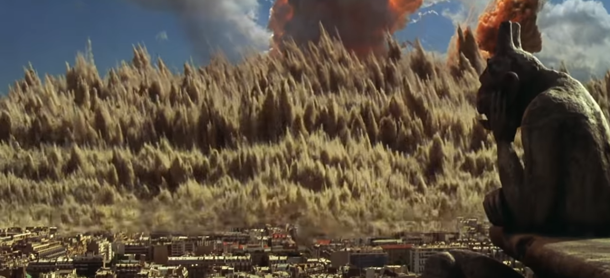
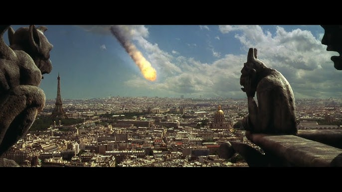
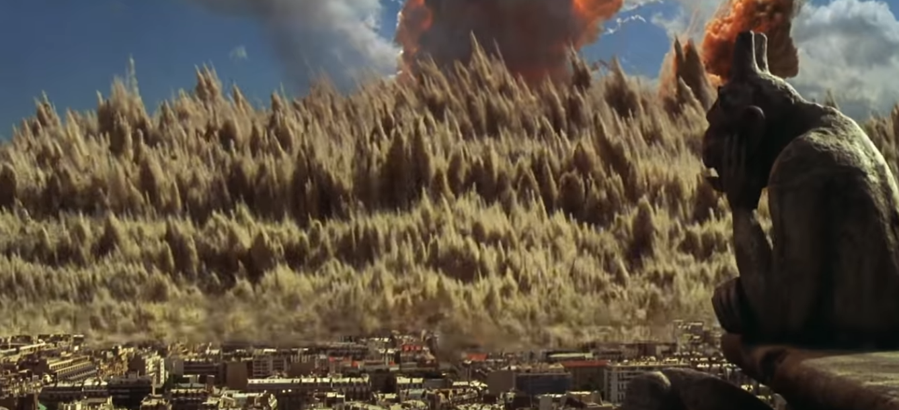

Armagedon
Timestamps:
In Armagedon, Harry Stamper is tasked with drilling a hole in the astroid heading towards earth.
The United States Government and NASA divise a plan to insert a nuclear warhead into the hole
that Harry will drill. Harry selects his team of objectively unqualified people, but the show
must go on as they are the best drill team earth has. The meteor is the size of Texas and will
destroy the earth and make mankind go extinct, so it is vital to get the job done before it
is too late.
Generally, many believe that Armageddon was awful in terms of science. Even within the first opening
scene the absolute power of an astroid impact was down-played: "It is correctly pointed out that an asteroid wiped out the dinosaurs 65 million years ago. But the explosive power is stated as a miserly 10,000 atomic bombs. This is wrong. That asteroid created a blast of 100,000,000 atomic bombs! The figure is off by four zeroes"
(Jupiter Science, 1998).

The idea that a singular nuclear warhead could split a Texas-sized astroid is downright "stupid" in intellectual terms. An astrophysicist -- Kirsten Howley -- adds their input:
Image Adapted From: (Donets, 2017)
The idea that a singular nuclear warhead could split a Texas-sized astroid is downright "stupid" in intellectual terms. An astrophysicist -- Kirsten Howley -- adds their input:
So, we're talking about something that's an 800-mile-in-diameter object that's going to hit Earth in one hour. The amount of energy it would take to push two equal-sized pieces in opposite directions such that they miss Earth [like in “Armageddon”] is equivalent to about the total energy output of the sun in a day,” Howley says. “And we do not have that capability
(Schelenz, 2021)
So far the movie is objectively incorrect, but I must admit, it is sometimes fun to turn off the science-brain and enjoy
movies at face value. There were many funny moments that I loved, but again, I must admit, the scienece was off by a long shot.
Another major issue that the movie had was that no one saw an astroid the size of Texas until 18 days before impact:
“You would probably be able to see it with the naked eye at least a few months before it hit. In Armageddon, they don’t notice it until 18 days before the rock smashes into us.",
says Alastair Bruce -- an Edinburgh University PhD student (Monks, 2020). I am no astrophysicist, but I can safely assume
that if texas was flying towards earth at 22k mph, I would see it earlier than 18 days before impact.
Another issue (they keep piling up) is that the bomb itself would have to be so powerful not only would it have
to produce as much energy as the sun, it would also turn the meteor into a radioactive one, said astronomer Phil Plait (Lewis, 2014).
Picture a bomb with the power of the sun detonating above the earth's atmosphere: we'd be toast and in no better position than
when the astroid was the problem.
Lastly, the main issue I personally noticed is that simply detonating a bomb in the astroid wouldn't help
the problem: instead of 1 large astroid, it would be split into a shower of meteorites resembling
hellfire.
"Even if you were able to vaporise the entire rock, it would still be moving with an incredible speed towards the earth... All you’ve really done is spread out the impact.”
(Monks, 2020)
So If we manage to survive the nuclear explosion above the atmosphere, we now have to avoid being struck down by particles that would
be spread out rather than centeralized in 1 texas-sized meteor.
The meteor was the main driving force of the plot, being that they destroyed it or everyone -- and largely everything -- on earth dies.
But in terms of scienece, this movie was bottom of the barrel. Many of the small meteorites would have destroyed a much larger area:
many basketball sized meteors did nothing but flip a car and destroy a streetlamp. The larger meteorites (which I suspect are
around 4-8 people tall) would have destroyed city blocks. The imagery of Paris being destroyed is among the only imagery that
looked accurate in terms of meteorite collisions with earth.
 
 
Donets, D. (2017, December 22). Texas map stock illustration [Digital Image]. IStock.
https://www.istockphoto.com/vector/texas-map-gm895972652-247475738
Jupiter Science. (1998). Movie Review of Armageddon (and Deep Impact) from a Scientific Viewpoint. https://www.jupiterscientific.org/sciinfo/armageddon.html
Lewis, T. (2014, September, 16). Asteroid Science: How 'Armageddon' Got It Wrong. https://www.livescience.com/47864-armageddon-film-asteroid-science.html
Monks, R. (2020, July 16). Everything wrong with Armageddon – according to an astrophysicist. https://inews.co.uk/culture/film/armageddon-everything-wrong-according-to-an-astrophysicist-69043
Schelenz, R. (2021, February 11). What Hollywood gets wrong (and right!) about protecting the Earth from asteroids. University of California.
https://www.universityofcalifornia.edu/news/what-hollywood-gets-wrong-and-right-about-protecting-earth-asteroids